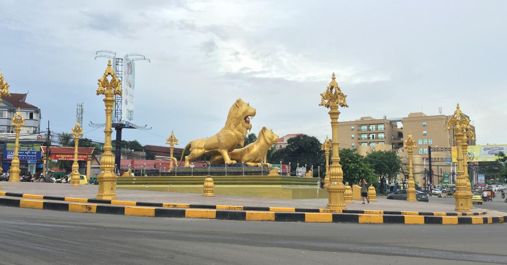

Sihanoukville (Khmer: ក្រុងព្រះសីហនុ, Krŏng Preăh Seihănŭ [kroŋ prĕəh səjhanuʔ]), also known as Kampong Saom (Khmer: កំពង់សោម, Kâmpóng Saôm [kɑmpɔŋ saom]), is a coastal city in Cambodia and the capital of Preah Sihanouk Province, at the tip of an elevated peninsula in the country's south-west on the Gulf of Thailand. The city has a string of beaches along its entire coastline and coastal marshlands bordering Ream National Park in the east. The city has one navigable river, the mangrove-lined Ou Trojak Jet, running from Otres Pagoda to the sea at Otres. Several thinly inhabited islands, under Sihanoukville's administration,[4] are near the city. The city, which was named in honor of the former king Norodom Sihanouk, had a population of around 89,800 people and approximately 66,700 in its urban center in 2008.[5] Sihanoukville city encompasses the greater part of six communes (Sangkats) in Sihanoukville Province. It has evolved parallel to the construction of the Sihanoukville Autonomous Port, which commenced in June 1955, as the country's gateway to direct and unrestricted international sea trade. The only deep-water port in Cambodia includes an oil terminal and a transport logistics facility.The city has developed into the country's primary hub for coastal tourism, including as a gambling destination
